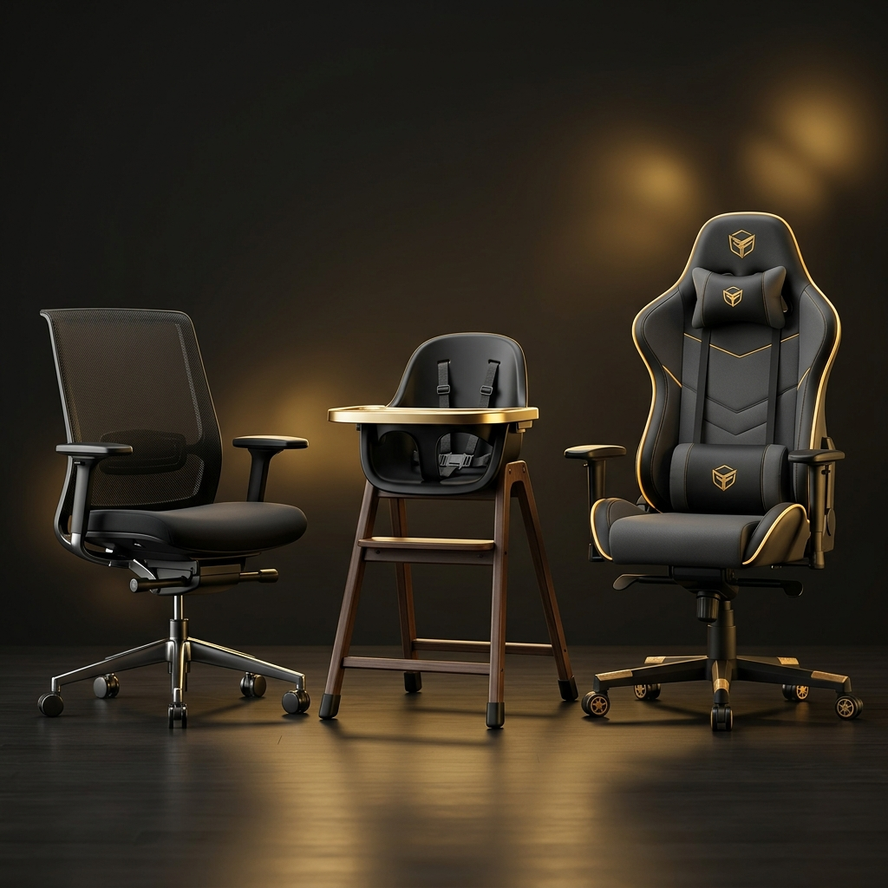
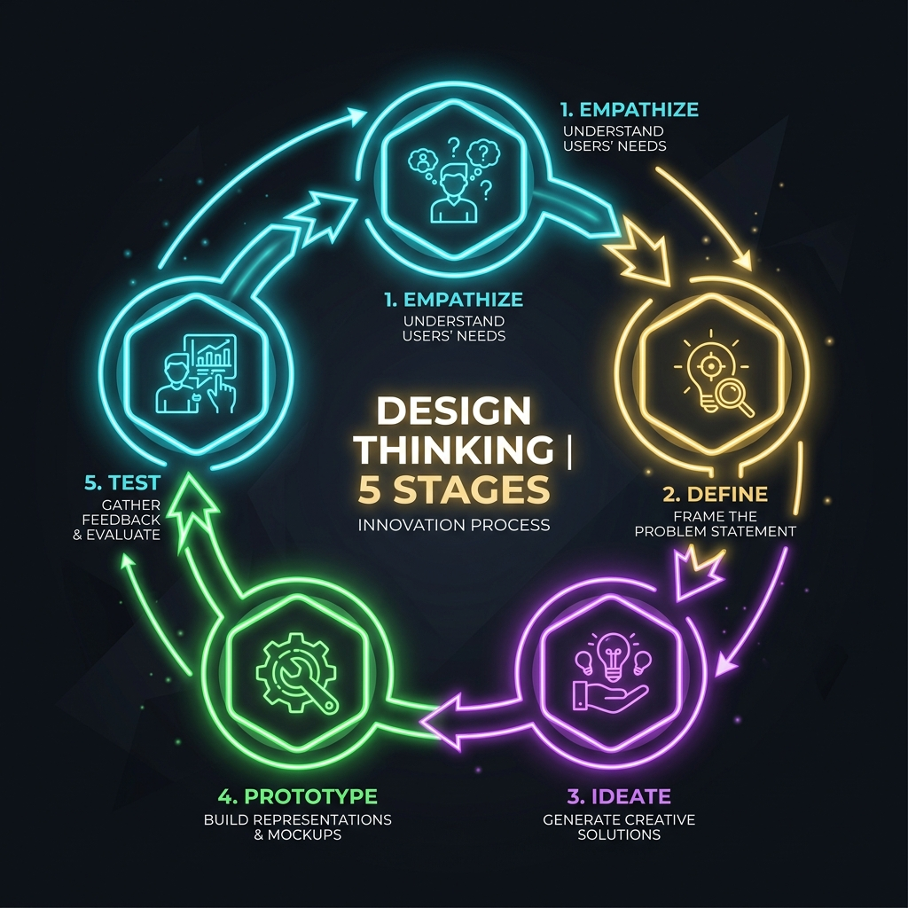
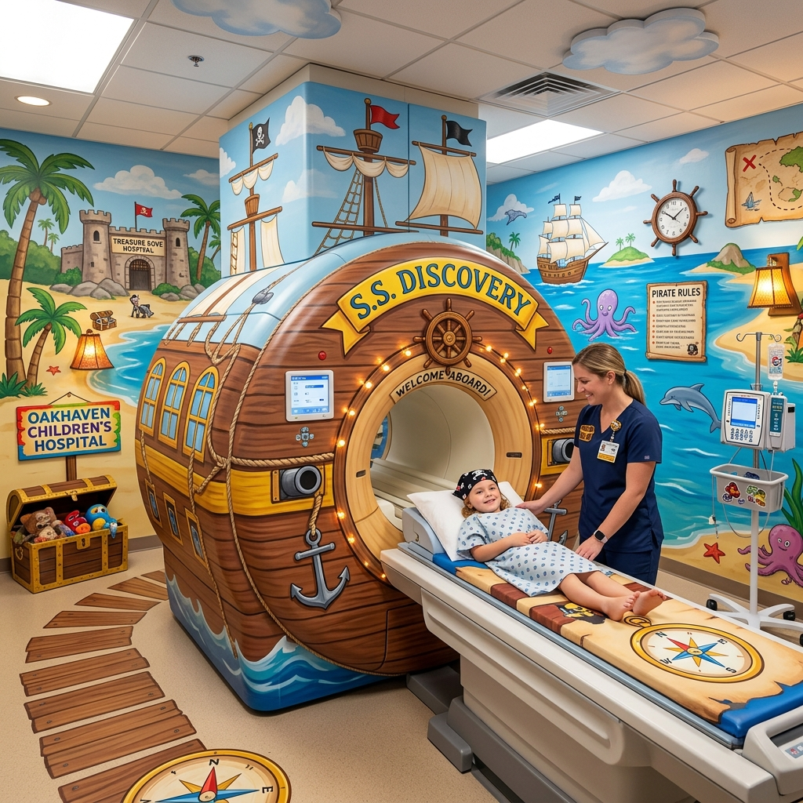
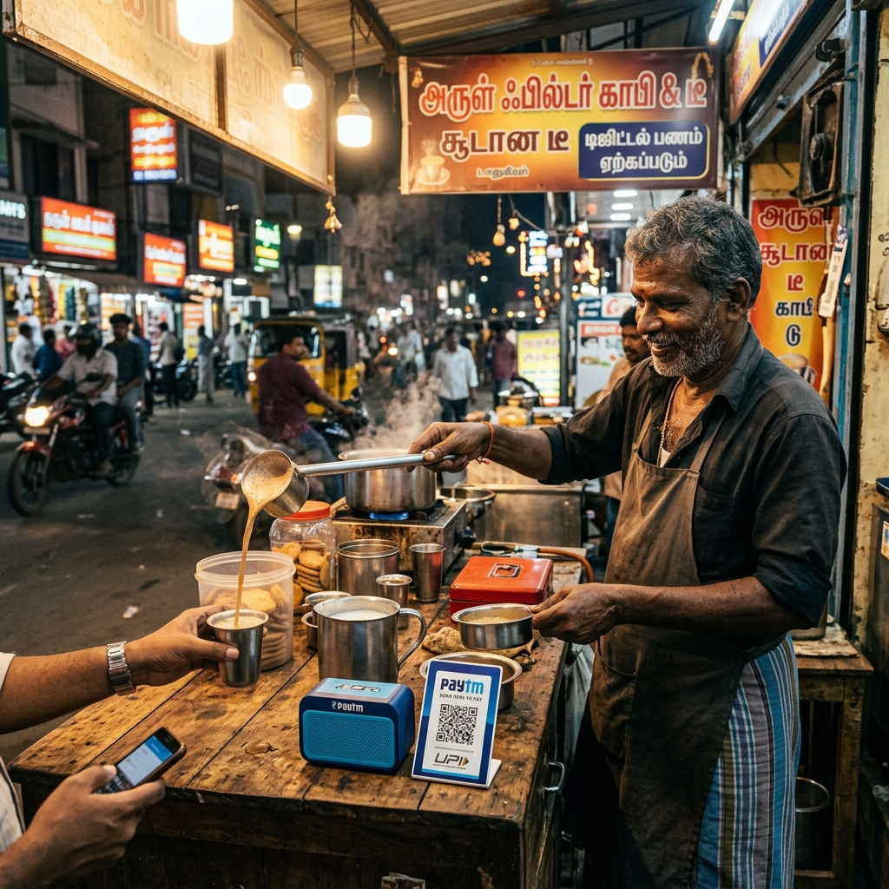

What I Know About Design Thinking for This Course (CAT 1 Scope)
Module I: Introduction & Module II: Problem Definition
Classes 1 – 12 Sequential Coverage per Official Lesson Plan & Question Bank

Can you design effectively without knowing these details?



Module I Review (Classes 1 - 6)
• Engineering Design vs Usability Fit
• 4 Drivers of Product Evolution
• Product vs Process vs System vs Software
• 5 Stages (Empathize → Define → Ideate → Prototype → Test)
• Persona Blueprint (5 Fields)
Module II Review (Classes 7 - 12)
• 4 Empathy Tools (Observe, Shadow, Immerse, Interview)
• Empathy Map (Says, Thinks, Does, Feels)
• Customer Journey Map & Emotion Curve
• 5-Why Root Cause & Fishbone Diagram
• POV Statement Blueprint